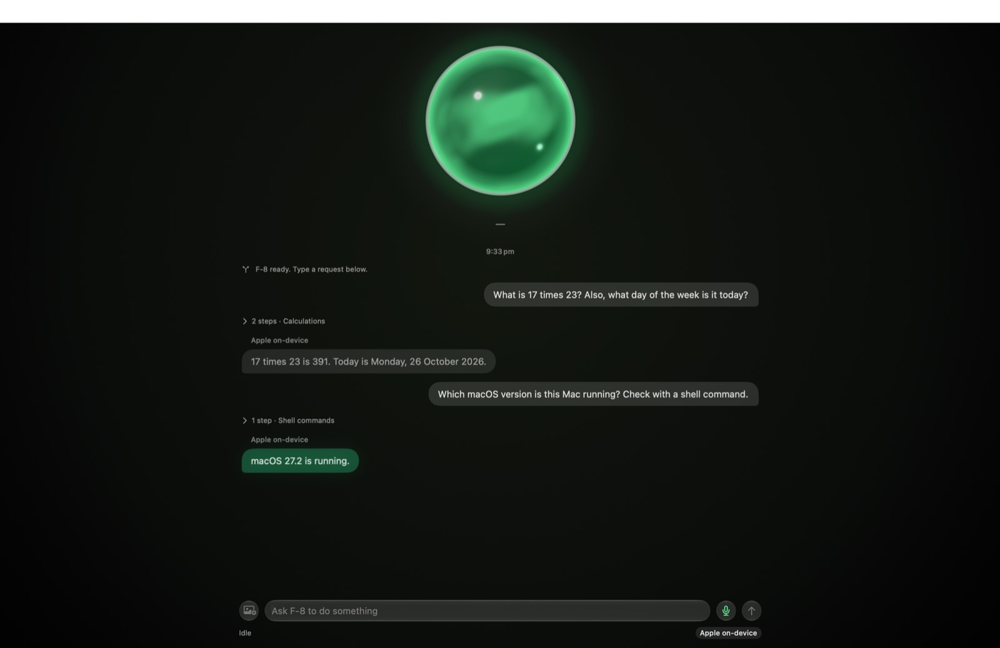

An assistant that lives on your Mac. It listens for its name, uses your apps for you, and asks before anything that matters.

If there's no Open Anyway button, paste this into Terminal, then open F-8 again:
xattr -dr com.apple.quarantine /Applications/F-8.app
⌥⌘F8 from anywhere to bring F-8 up.This is an early test build, so things will break. When something does, note what you asked, what F-8 did, and take a screenshot if you can, then send it to whoever shared this page with you.